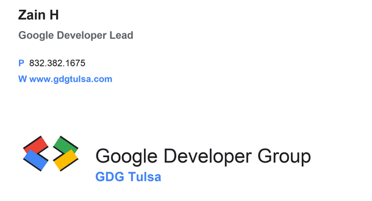

Learn by doing
Workshops, codelabs, live demos, and practical build nights for AI, Cloud, Firebase, Web, Android, and Gemini.
Google Developer Group Tulsa
GDG Tulsa is a newly launched developer community bringing local builders together for practical learning, hands-on workshops, demos, and conversations around modern Google tools.
Why GDG Tulsa
GDG Tulsa is part of the global Google Developer Groups community: local groups focused on helping people connect, learn, and grow alongside Google technologies and experts.
Workshops, codelabs, live demos, and practical build nights for AI, Cloud, Firebase, Web, Android, and Gemini.
Connect with people building products, learning new stacks, hiring, mentoring, and sharing hard-earned lessons.
Turn talks into prototypes, prototypes into projects, and projects into Tulsa’s next wave of developer energy.
What you can learn
GDG Tulsa turns Google’s developer ecosystem into practical sessions you can actually use: prototype with AI, deploy to the cloud, analyze usage, and ship polished apps.
For community builders
For product thinkers
For developers and founders
Bring curiosity. Leave with working patterns across Google’s developer stack.

Events
The first official GDG Tulsa session introduced the community and the tools developers can use to build.
Hands-on sessions for prototyping, bridging theory into practice, and exploring real-world AI workflows.
Community recaps, product updates, demos, and discussion after major Google developer announcements.
Focus Areas
Pick a track to sketch the kind of session GDG Tulsa can host next.
Use Google AI Studio and Gemini APIs to turn a local Tulsa problem into a small working prototype.
Get Connected
GDG Tulsa is led locally by Zain H, Google Developer Lead. Follow the official chapter page for events, announcements, and registration details.

Join on GDG Community